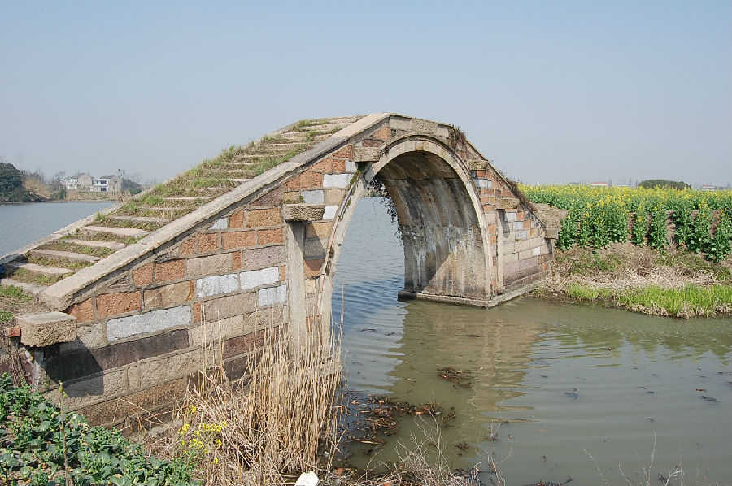

嘉兴市文物保护网 · 市级文物保护点 · 2020-11-09 · 原文

新民村马泾桥位于凤桥镇新民村6组，西临海盐塘，北接余新镇曹王村。南北向横跨马泾桥浜，系单孔无栏石拱桥。桥始建于何年不详，崇祯《嘉兴县志》卷三《桥梁》：“新丰都马泾桥。”说明明末已有此桥，现桥首“马泾桥”额之右有“光绪六年”字样，可见现桥重建于清光绪六年（1880）。桥全长21.70米，顶宽2.50米，底宽2.75米，呈喇叭形，拱跨7.80米，矢高3.9米。南、北各有石阶20级，共有8个天盘石，并刻有缠枝纹。东西桥首分别有“马泾桥”额。东桥联为“南湖前路涧□华□为驷马题，东海小云兴偃波自作长龙卧。”西侧为海盐塘，桥联无法看到。该桥是嘉兴地区现存为数不多的石拱桥之一，保存较好，造型简朴，构造讲究，具有较高的历史和科学价值。2009年公布为市级文保点。